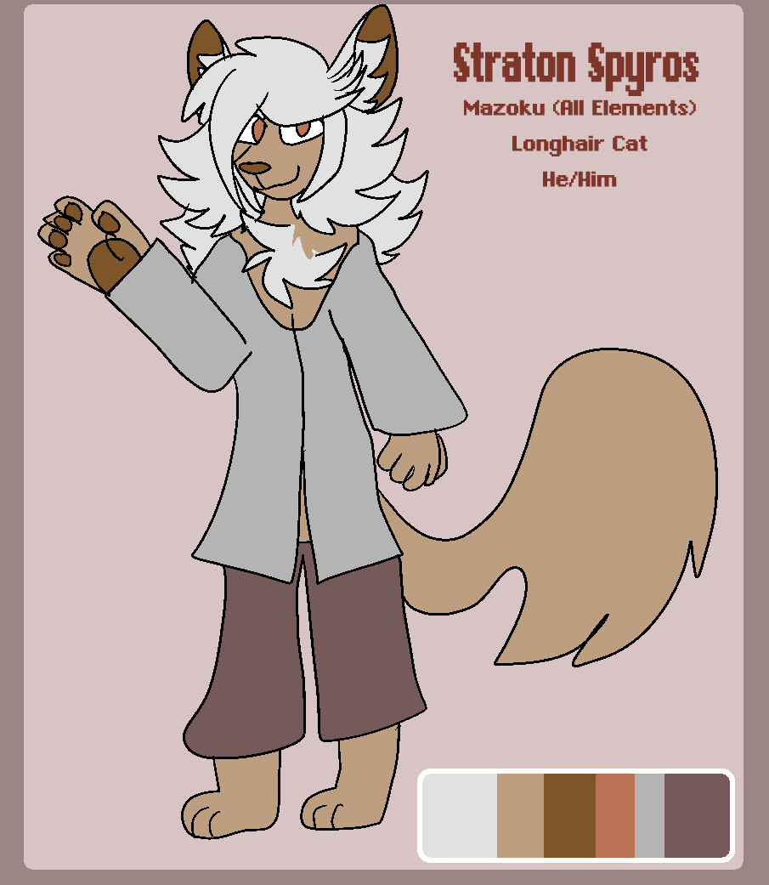

Straton Spyros
he/him | longhair cat | elemental

art placeholder
FULL NAME // Straton Spyros
PRONOUNCIATION // Strah-tun Spy-ros
AGE // Unknown
PRONOUNS // He/Him
SPECIES // Mazoku (longhair cat)
AFFILIATION // Space Beyond Time, the Magic Guild
ABILITIES // Elemental magic
ALLIES // Archimedes
ADVERSARIES // ...
A mysterious and helpful Mazoku feline from the Space Beyond Time; Straton is the one to grant Aera, Luca, and Leena their magic.
Childhood friends with Darius, Straton was banished from the Islands in his teens for reasons yet unknown.
Straton is snarky and smug, but in a helpful sort of way, and has a general fatherly dispositon come Arc 2. He's friendly, perhaps misleadingly so...
Spotify Playlist goes here...
"insert Straton quote here once scripting is done..."